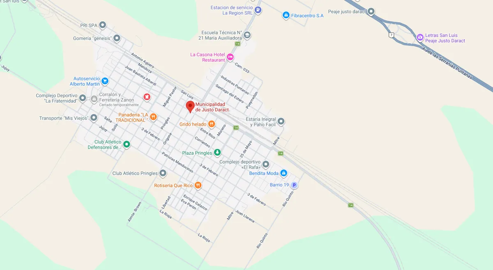

En persona
Participá de una clase en un espacio de Justo Daract, con acompañamiento.
Clases en persona y cursos online, con acompañamiento.

Abrir en Google Maps ↗ (se abre en una pestaña nueva)Podés cursar en los Centros de Capacitación y en el Salón Municipal.
El punto rojo marca la Municipalidad, como referencia.
Participá de una clase en un espacio de Justo Daract, con acompañamiento.
Combiná encuentros presenciales con actividades para seguir por tu cuenta.
Entrá a los cursos desde el celular y avanzá a tu ritmo.
Buscá el tema que te interesa y empezá por ahí.
Leé y practicá sin apuro. Podés volver cuando lo necesites.
Ingresá a tu cuenta para conservarlo en tu perfil.
Estudiantes de Programador Universitario en Sistemas te acompañan durante el aprendizaje.
4 meses
Elegí un curso o creá una cuenta para guardar tus resultados.